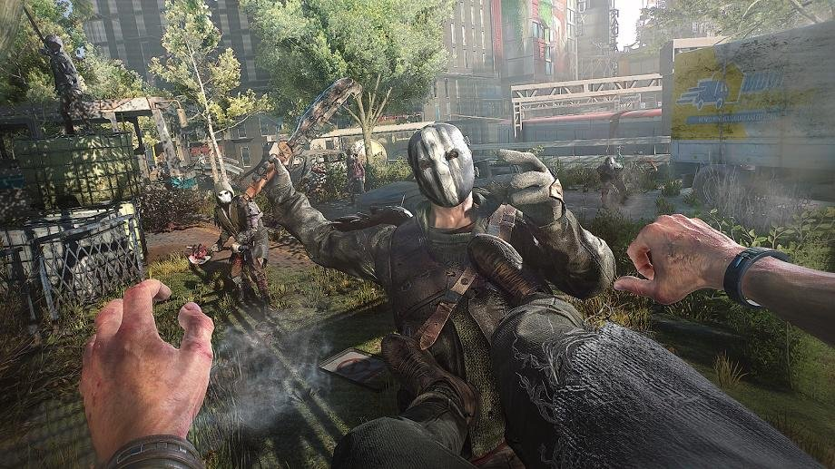
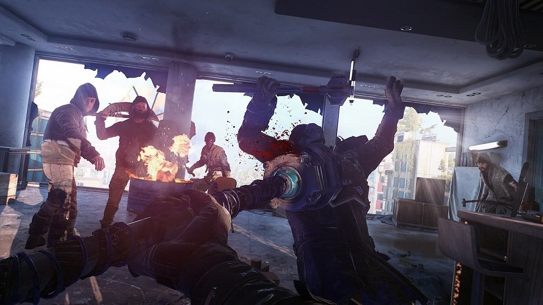

О чём вообще игра?
В недалёком будущем случился очередной зомби-апокалипсис. Человечество почти вымерло, но даже в этот момент начинает кромсать друг друга. Вместо того чтобы объединиться, общество создаёт группировки и альянсы. И да, чаще всего они враждуют. Вот примерно в таком сеттинге разворачиваются события сиквела. Кстати, знать сюжет оригинала совсем не обязательно, поскольку у второй части своя сюжетная линия, никак не связанная с ним.
В центре сюжета оказывается странствующий парень с красивым именем Эйден Колдуэлл. Он путешествует по миру и
пытается разыскать свою сестру по небольшим зацепкам. След приводит его в Вилледор — один из последних
уцелевших городов после Падения (так выжившие называют утечку вируса). Теперь главному герою предстоит
окунуться в тайны этого поселения, понять его порядки и заручиться союзниками.
В игре есть сразу несколько сторон, одну из которых игрок может выбрать сам. Вообще выбирать придётся много.
Ещё во время пресс-показа мы заметили, что даже в сторонних квестах приходится принимать решения — правда,
насколько они реально влияют на дальнейшие события ещё предстоит узнать. Сами задания выполнены в лучших
традициях «Ведьмака» — даже самое банальное поручение может обернуться лихо закрученной историей с ружьями
на стенах.
Как она играется?
Это всё тот же экшен от третьего лица с упором на рукопашные схватки и паркур. Лучше всего геймплей Dying
Light 2 описывает фраза «Mirror's Edge с зомби». Главный герой лихо скачет по крышам, бегает по стенам и
цепляется за карнизы. Эти же навыки он применяет и в схватках. Например, перепрыгивает через противника и
бьёт двумя ногами в стоящего позади.
В качестве основного аргумента в любой стычке используется оружие, собранное из подручных средств. Всё как в
классике жанра: топор ручной работы из старой лопаты, изящная ножка от стула и так далее. Помимо этого, в
игре есть крафтинг предметов и поиск ценных ресурсов, которые нужны для создания новых вещей и улучшения уже
найденных.
Системные требования Dying Light 2
Передвижение по городу выполнено в стиле первой части. Внизу лучше не появляться — там повсюду снуют зомби и
мутанты. Поэтому гораздо выгоднее передвигаться по крышам. Но да, там тоже небезопасно, можно встретить
бандитов или забрёдших туда мертвецов.
Вилледор вообще очень похож на одну огромную площадку для паркура. Выжившие здесь люди приспособились к
жизни рядом с зомби и везде поставили специальные трамплины и рампы, чтобы обезопасить своё передвижение.
Ими очень удобно пользоваться во время исследования местности или побега от орды.
Переработали и механику ночи. В тёмное время суток Эйден начинает медленно умирать, поскольку в его теле
тоже сидит вирус. Восстановить полоску иммунитета можно под ультрафиолетовой лампой или с помощью
расходников. Плюс на улицу выходят самые опасные мутанты, которые могут догнать игрока где угодно, если тот
будет слишком шуметь или попадётся на глаза плакальщику — дико орущему зомби.
Во всём остальном Dying Light 2 — это такая «игра Ubisoft». Здесь обширный открытый мир и много занятий.
Захват местных вышек, рейды на крупные захоронения лута по ночам, битвы с особо упитанными монстрами и
испытания в стиле «пробеги 10 меток за 2 минуты».